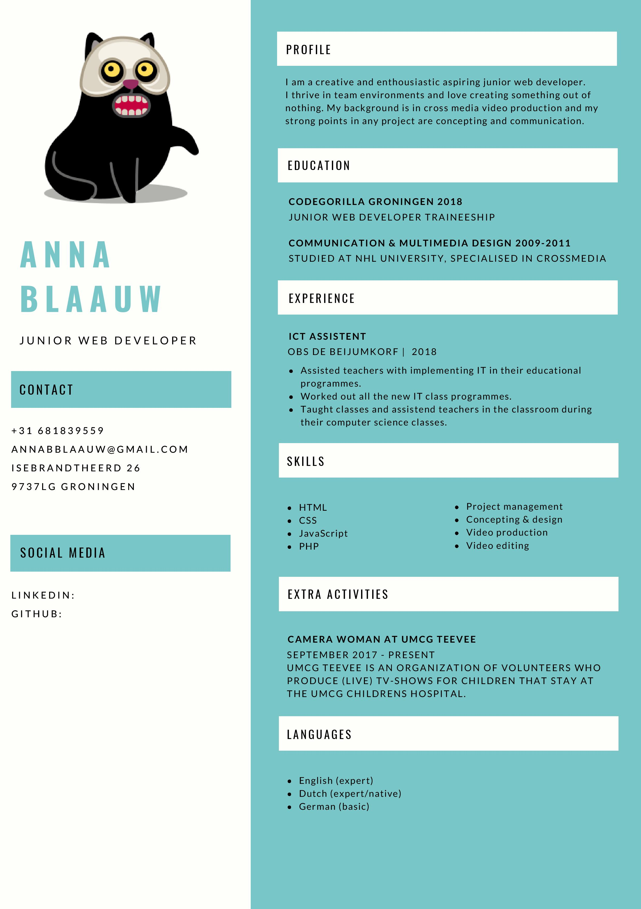

Mijn CV 
Resume Anna Blaauw
Hallo, ik ben Anna Blaauw.
Ik ben een Groninger, een moeder, een grote zus en een dochter.
Daarnaast ben ik een sociaal en creatief mens, die houdt van samenwerken en creeeren.
Als beginnend web developer vind ik het enorm leuk en uitdagend om de enorm diverse mogelijkheden binnen dit vakgebied te verkennen.
mijn achtergrond is in crossmedia film productie en mijn krachten liggen bij concepting en communicatie.